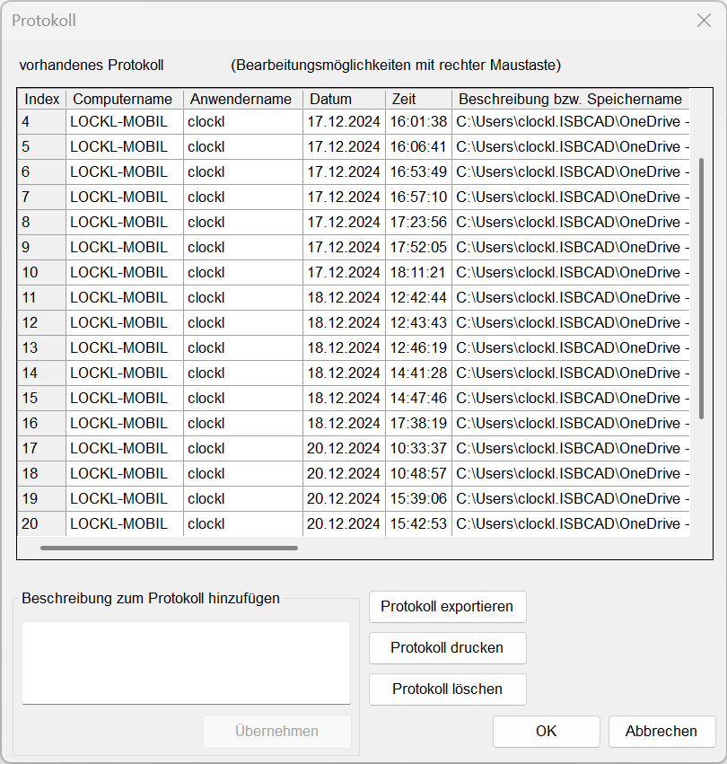
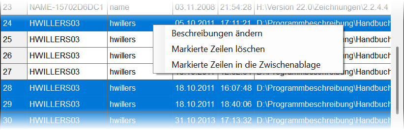

")
Anzeigen und Ausdrucken eines Protokolls zum Werdegang einer Zeichnung. Öffnet den Dialog Protokoll.
·Jedes Mal, wenn eine Zeichnung gespeichert wird, wird das Protokoll um einen Eintrag erweitert.
·Die Daten werden in der Zeichnungsdatei gespeichert. Sie bleiben auch dann verfügbar, wenn die Zeichnung auf einem anderen Speichermedium oder unter einem anderen Dateinamen gespeichert wird.
Diese Daten werden erfasst:
·Name des Computers,
·Anwendername,
·Datum und Zeit,
·Speicherort und Dateiname oder eine Beschreibung (Kommentar).
Optionen im Dialog "Protokoll"
 |
Beschreibung zum Protokoll hinzufügen
Fügt nach dem letzten Tabelleneintrag einen neuen Eintrag mit der Beschreibung ein.
Geben Sie einen beliebigen Text in das Eingabefeld ein. Mit der Eingabetaste können Sie einen Zeilenumbruch hinzufügen. Durch Drücken von Übernehmen wird dem Protokoll ein neuer Eintrag mit dem eingegebenen Text hinzugefügt. Der Text wird anstelle des Speichernamens angezeigt.
Protokol exportieren
Exportiert das gesamte Protokoll in das Excel-Format CSV oder das Textformat TXT. Die Spaltenüberschriften werden automatisch hinzugefügt. Im TXT-Format sind die Einträge durch Tabstopps getrennt.
Geben Sie im Dialog den Speicherpfad und einen Dateinamen an und wählen Sie das Dateiformat *.csv oder *.txt aus. Klicken Sie abschließend auf Speichern.
Protokoll drucken
Ausgabe des Protokolls mit dem PDF-Drucker eDocPrinter PDF Pro.
Geben Sie im Dialog den Speicherpfad und einen Dateinamen an. Klicken Sie abschließend auf Speichern.
Um das Protokoll auf anderen Druckern auszugeben, nutzen Sie zunächst den Zwischenschritt über die Funkion Protokoll exportieren oder das Übertragen des Protokolls in die Windows-Zwischenablage (siehe weiter unten "Über das Kontextmenü"). Im Zielprogramm können Sie dann einen anderen installierten Drucker auswählen.
Protokoll löschen
Das gesamte Protokoll wird nach Bestätigung aus der Zeichnung gelöscht.
Über das Kontextmenü (rechte Maustaste)
 |
Beschreibung(en) ändern |
Ändern der Beschreibung des markierten Tabelleneintrags. Bei Mehrfachauswahl können mehrere Beschreibungen gleichzeitig bearbeitet werden. Die Beschreibung muss vorhanden sein. |
Markierte Zeile(n) löschen |
Löscht den oder die markierten Tabelleneinträge. |
Markierte Zeile(n) in die Zwischenablage |
Legt den oder die markierten Tabelleneinträge in die Windows-Zwischenablage. Mit der Einfüge-Funktion des Zielprogramms oder mit Strg+V kann der Inhalt eingefügt werden. |
Einzel- und Mehrfachauswahl
Einzelauswahl |
·Klicken Sie einen Tabelleneintrag an. |
Mehrfachauswahl |
·Um benachbarte Tabelleneinträge im Block auszuwählen: -Halten Sie die Umschalttaste gedrückt und klicken Sie die erste Zelle an. Klicken Sie anschließend die zweite Zelle an, um den Tabellenbereich zwischen den angeklickten Zellen auszuwählen. -Lassen Sie die Umschalttaste los. ·Um nicht benachbarte Tabelleneinträge auszuwählen: -Halten Sie die Strg-Taste gedrückt und wählen Sie die Tabelleneinträge aus. -Lassen Sie die Strg-Taste los. ·Um alle Tabelleneinträge auszuwählen, drücken Sie die Tastenkombination Strg+A. |
OK
Übernimmt die Änderungen und schließt den Dialog.
Abbrechen
Verwirft die Änderungen und schließt den Dialog.